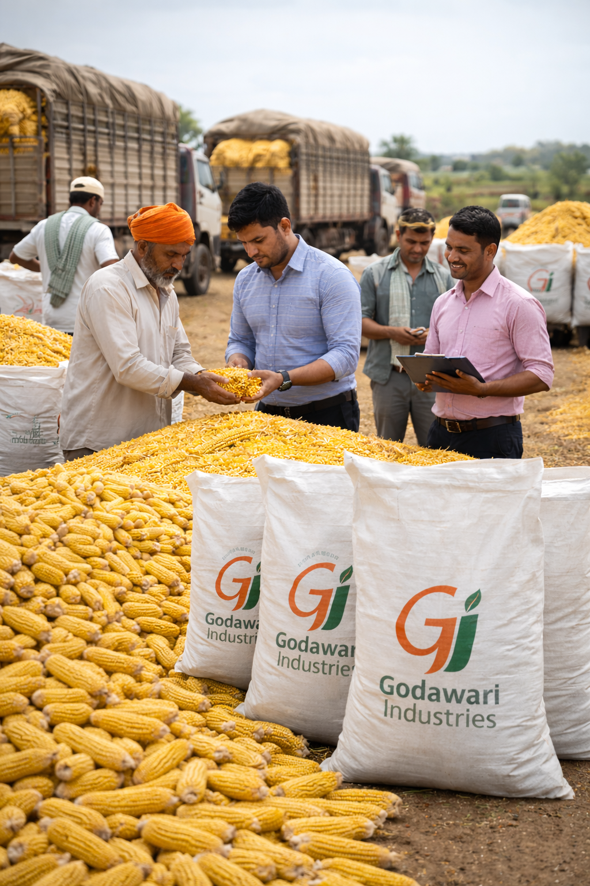
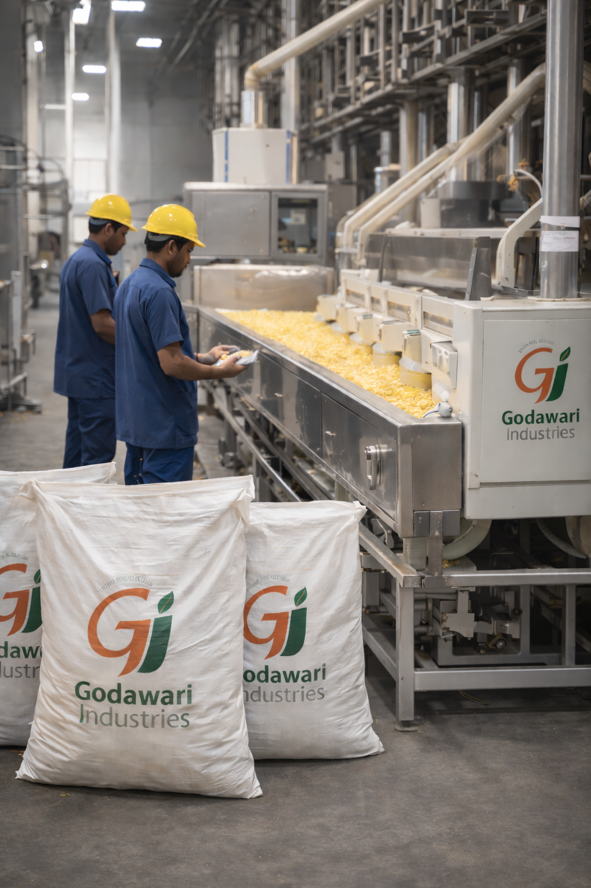
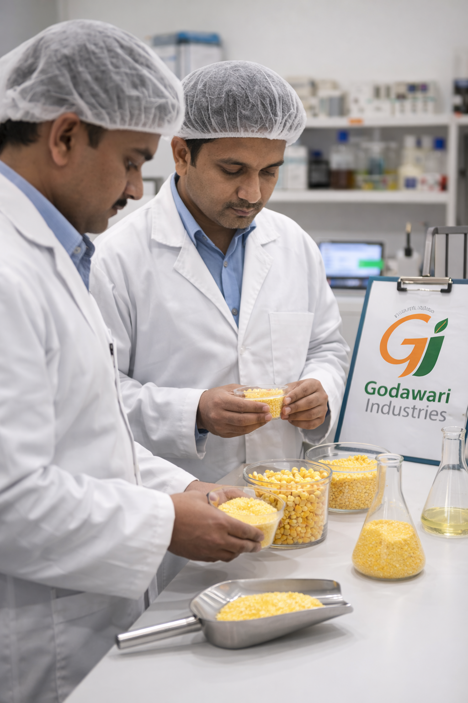
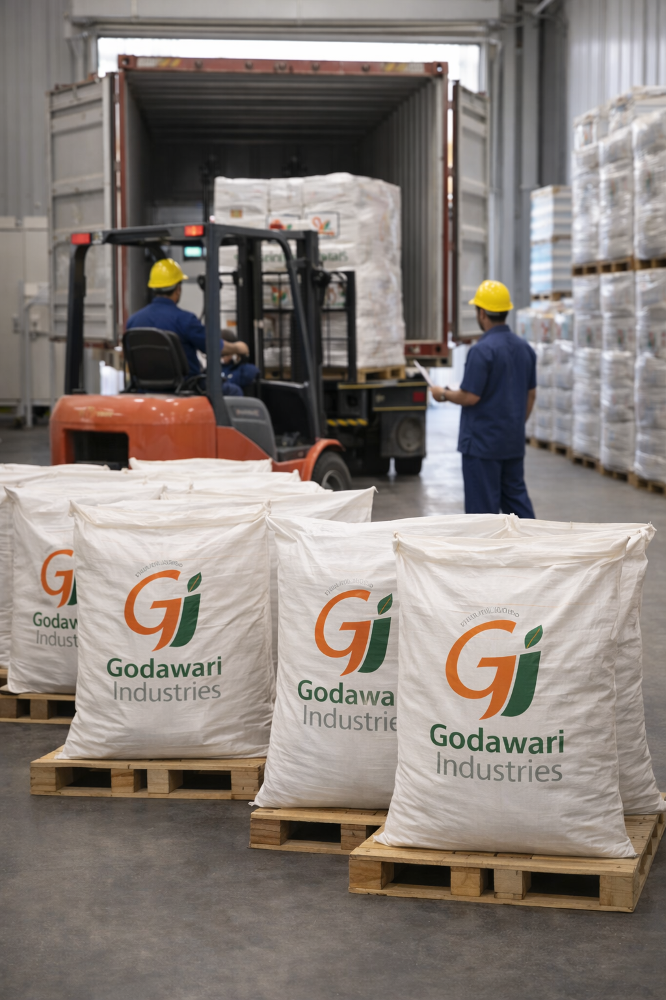

1
Raw Material Purchase

Located close to premium maize-producing regions, raw material is sourced year-round by experienced professionals.
2
Quality Check & Batching

Each bag is manually inspected and batched before being stored in fumigated stockyards as per industry standards.
3
Grits Manufacturing

Fully automated cleaning and milling systems classify products into four quality grades without human contact.
4
Quality Control

Random laboratory testing is conducted multiple times each shift to ensure safety and consistency.
5
Packing & Dispatch

Products are hygienically packed, batch-coded for full traceability, and dispatched through efficient logistics.